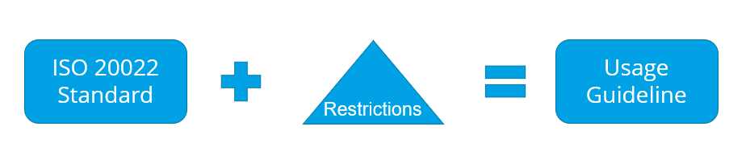

Document purpose and overview
This document MX Messaging Procedures (Part D) is one part of a suite of documentation to help participants understand what is required to become a high value clearing system (HVCS) participant and how to send and receive individual HVCS instructions and NZD HVCS payments that the participant cannot revoke or reverse after settlement.
- Part A — HVCS Overview
- Provides a high-level overview of the HVCS community, message types, how HVCS clearing and settlement works, and the business, technical, and regulatory environment in which the process operates. This is a non-binding document for use as guidance only.
- Part B — HVCS Common Procedures
- Provides binding procedures and product requirements that apply to all HVCS instructions at all times. This document also contains some non-binding commentary and best practice.
- Part C — SCP Procedures
- Provides binding procedures and product requirements that apply only to an HVCS instruction that is a same day cleared payment. This document also contains some non-binding commentary and best practice, such as recommended terms and conditions with customers.
- Part D — MX Messaging Procedures (this document)
- Provides binding procedures on how to send and receive MX messages (ie, NZ HVCS ISO 20022 messages) across the HVCS MX CUG. This document also contains some non-binding commentary and best practice.
- Part E — MT Messaging Procedures
- Provides binding procedures on how to send and receive MT messages (ie, NZ HVCS ISO 15022 messages) across the HVCS MT CUG. This document also contains some non-binding commentary and best practice.
- Part F — Co-existence Procedures
- Provides binding procedures for participants during the co-existence phase of the migration from sending and receiving MT messages to MX messages.
This document should be read in conjunction with the Payments NZ Rules (in particular, Part 9).1 Part 9 contains the HVCS clearing and settlement rules which specify the requirements for participants to create, exchange, settle, deliver and receive HVCS instructions and make HVCS payments (including SCPs) through HVCS. Part 2 contains the access and participation rules for an entity to join HVCS.
In addition to the Rules, the applicable HVCS standards (Appendix 14) which specify how participants comply with Part 9 are comprised of:
For information on how to determine whether the content of an applicable HVCS Standard in Appendix 14 creates binding legal rights or obligations, please see Part A - Overview.
Notwithstanding anything in clause 1.8 of the Rules or in Part A - Overview, any reference to actions a person "should" take or anything a person "should" do is intended to convey a best practice with which a person should comply with only, but which has no legal effect
- This document discusses the MX Messaging Procedures that apply to HVCS instructions. It is recommended if you're not familiar with the ISO 20022 message format to read ISO for Dummies.
- This document is divided into eight chapters.
- Chapter 1 provides an overview on SWIFT tools including MyStandards, the Readiness Portal and the Transaction Manager.
- Chapter 2 specifies the binding obligations for participants using the MX message format and outlines the in scope MX messages.
- Chapter 3 introduces key concepts of ISO 20022 including the message structure, agents in a payment, identifying message types and usage guidelines, external code lists, BICs, Distinguished Names, remittance information, structured data, character sets, and payment identifiers.
- Chapter 4 specifies how to identify Same-day Cleared Payments (SCPs) and how to format the account number for SCPs.
- Chapter 5 specifies how to represent Direct and Cover payments.
- Chapter 6 provides more information on payment returns.
- Chapter 7 provides an overview on Exception and Investigation messages and market practice guidance for elements used in NZ HVCS.
- Chapter 8 provides an overview on SWIFTNet Y-Copy Messages and message validation.
- HVCS instruction;
- Payment message;
- Return message;
- Exception and investigation message;
- System message;
- Customer credit transfer message; and
- FI credit transfer message.
For the purposes of these MX Messaging Procedures, all references to the following defined terms means an HVCS instruction that is an MX message:
Chapter 1: Introduction to MX message specifications
- SWIFT maintains the MX Message Specifications on behalf of Payments NZ and participants. The specifications are maintained using SWIFT's MyStandards tools and published to the MyStandards website.
- MyStandards is a website licensed by SWIFT to Payments NZ and participants for viewing draft and final standards. It also enables participants to compare the MX Message Specifications to other industry standards such as CBPR+ and HVPS+.
- You can access Payments NZ's MyStandards Community here
- The MyStandards Help page can be accessed here
- CBPR+ is designed for cross border flows and is the dominant standard referenced in these MX Messaging Procedures.
- New Zealand's HVCS Rules are designed for clearing NZD payments between participants.
- Under ISO 20022, intermediaries need to be bilingual in accordance with the Co-existence Procedures, and:
- Use CBPR+ for cross border correspondents.
- Use the HVCS Rules for domestic settlement.
- The following diagram shows the interaction between CBPR+ and MX messages:
- A cross border correspondent (A) (debtor agent) sends a payment instruction (that aligns to CBPR+ message specifications) to their NZD Vostro account provider (B), who is also a participant.
- The participant acting as an intermediary (B) forwards the payment instruction in the form of an MX payment message and settles NZD to another participant (C).
- The participant (C) acting as a vostro provider informs their overseas Vostro customer (D) of the payment using a CBPR+ message.

- A Usage Guideline is the formal definition for the language used to exchange HVCS instructions and other SWIFT messages. This includes the technical layout of the XML formatted messages, plus the expected content.
- ISO 20022 base standards are developed by the ISO 20022 Standards Evaluation Group (SEG). ISO 20022 standards are available on SWIFT's MyStandards website.
-
Restrictions
are constraints applied to the ISO 20022 base standard and must be applied such that they do not
contradict that standard. Restrictions are defined by participants of New Zealand's HVCS in
conjunction with Payments NZ and can:
- Prevent use of a non-mandatory element
- Make a non-mandatory element mandatory
- Restrict the number of occurrences of an element
- Restrict data to specific characters or patterns
- Define cross-element rules
- Usage Guidelines are a combination of the ISO 20022 base standard message definition plus restrictions that adapted the specifications to meet local market practice. The Usage Guideline can also include additional commentary to explain how local instructions should be constructed for specific scenarios. In the New Zealand context, the Usage Guidelines that apply to HVCS are contained in the MX Message Specifications.
- The MX Message Specifications (also sometimes referred to as message usage guidelines or MUGs), together with sample MX messages, can be found in Payments NZ's HVCS Community on SWIFT's MyStandards website and are comprised of different types of rules as described in the diagram below.


- The MyStandards website includes capability to export copies of the MX Message Specifications for offline assessment.
- The archive contains three files for each MX message:
- A usage guideline in PDF format,
- The MX message specification in XLSX format, and
- The MX message specification in XSD format.
- Specifications are released as a versioned set.
- Schema changes will always be released with a new date.
- Technical versions can contain minor corrections to cross-element rules or navigation, though must not be used for schema changes.

- Content View Content View shows the ISO 20022 base standard and the restrictions that have been applied to it.
- Result View shows the MX Message Specifications after restrictions have been applied to the ISO 20022 base standard. Comments specify intended HVCS usage.
- Once the MX Message Specifications have been opened, it is suggested participants view the specifications in Results View. Results View shows only the agreed specifications whereas Content (View) shows all differences when compared to the underlying ISO 20022 base standard.
- Participants may search the message to find specific elements or click into the elements to explore the hierarchy.

Added space (' ') between 'ISO 20022' and 'base'
- Participants may want to determine the differences between the variants of a message. This comparison can be performed directly in MyStandards using the Compare function to:
- compare different versions of the same message from the same publisher (e.g., comparing the pacs.008 from MX Message Specifications 20220721 Technical Version 1 vs MX Message Specifications 20220721 Technical Version 4); or
- compare different versions of the same message from different publishers (e.g., compare the pacs.008 from CBPR+ against the MX Message Specifications).
- SWIFT provides detailed instructions on how to complete this on their MySWIFT Knowledge Centre.
- Since there is potential for MX Message Specifications versions to change, participants should perform a fresh comparison directly from MyStandards when required, rather than storing comparisons, which may become out of date.
- As the functionality to compare versions from different publishers is enabled only for users accessing MyStandards with a paid licence, the comparison between the MX Message Specifications and the CBPR+ equivalent has been completed and attached to the collection in MyStandards. These comparisons will be updated when there is a change in either underlying specification.
- The Readiness Portal is an extension to MyStandards that participants can use to accelerate development and verification of conformance to the new standards.
- A separate Readiness Portal has been created for each participant. Please email iso20022@paymentsnz.co.nz to request access your organisation's Readiness Portal. Once access has been enabled, the Readiness Portal will appear on your MyStandards home screen.
- The Readiness Portal enables participants to test messages against the MX Message Specifications with immediate validation that an HVCS instruction conforms not only the ISO 20022 base standard, but also additional restrictions defined in the MX Message Specifications.
- Results will alert users if they have returned an invalid HVCS instruction and highlight areas in the HVCS instruction that are incorrect, explaining what the error is against the MX Message Specifications.
- Textural rules and guidance are not validated in the Readiness Portal.

- SWIFT's Transaction Manager platform will provide a set of centralised common transaction processing services that today are typically provided by each financial institution in a distributed manner. Transaction Manager scope is limited to cross border payments and does not currently monitor payments sent across local market infrastructure.
- The platform will ensure interoperability between users of different data formats and connectivity channels, but those that want to unlock the full benefits of richer data and advanced platform features will need to implement ISO 20022 and APIs.
- Intermediaries will be able to receive their choice of API, MX or MX with embedded MT for different back office system applications or purposes. If the embedded MT format is chosen, some loss of data may occur in the MT message itself, but full message details can be accessed via the Transaction Manager or in the MX portion of the message.
Removed (4) and (5) - no longer relevant.
Chapter 2: MX message specification
- Participants must refer to MyStandards for detailed MX Message Specifications and in conjunction with Part F — Co-existence Procedures must:
- send MX messages that conform with this Part D and the MX Message Specifications, and
- receive and process MX messages that conform with this Part D and the MX Message Specifications.
- An instructing agent that utilises gateway products provided by SWIFT such as SWIFT Alliance Access (SAA) or Alliance Message Hub (AMH) must validate that the MX messages it sends conform to the approved MX Message Specifications.
- To comply with sub-clause (1), the instructing agent must use an approved version of the local usage guideline validation packages provided by SWIFT before sending an MX message on the SWIFT network.
- An instructing agent that utilises gateway products not provided by SWIFT must validate that the MX messages it sends conform to the MX Message Specifications before sending these MX messages on the SWIFT network.
- Subclause (2) applies to a participant who receives an SCP and is also the creditor agent for the message.
- The instructed agent must do the following to validate the content of Creditor Account before crediting the amount of the HVCS payment to the creditor's account:
- if the Creditor Account contains an account number for the creditor but no BIC, the instructed agent must ensure that the account number is a valid NZ account number by—
- performing interchange number and branch number interlock checking; and
- ensuring that the account number passes check digit validation in accordance with the SBI standards: BACHO account numbers:
Removed (b):
if the Creditor Account contains a credit card number or a scheme debit card number but no BIC, the instructed agent must ensure that the card number is valid by checking the issuer identification number (IIN) and the account check digit using the modulus 10 algorithm.
- If an instructing agent proposes to deduct a charge from an inward cross border redirection before sending the HVCS payment to the AVP MX CUG transaction delivery system for settlement,—
- SWIFT requirements apply to the Interbank Settlement Amount, Instructed Amount and Exchange Rate plus the associated charges fields of Charge Bearer and Charges Information; and
- the amount of the charge is determined by the instructing agent and its overseas customer.
- An instructed agent that receives a cross border redirection must not deduct a charge from the HVCS payment.
- Situation 1: Charge Bearer contains DEBT (NZD or converted to NZD).
- Case 1: Charges Information is present: If Charges Information is present,—
- the amount specified in Charges Information is the amount of the charge; and
- reduce the amount in the Interbank Settlement Amount of the redirected message by the amount in Charges Information that is owed by referencing the BIC identified in the Agent sub-element of the Charges Information field; and
- the content of Charge Bearer in the redirected message should remain as DEBT; and
- the content of the Charges Information field should remain unchanged throughout the entire payment chain.
- Case 2: Charges Information is not present: If Charges Information is not present,—
- the instructing agent may claim a charge from the debtor agent, but must not deduct the charge from the amount of the cross border redirection; and
- the content of Charge Bearer in the redirected message should remain as DEBT.
- Foreign currency transactions redirected after conversion to NZD: If an instructing agent proposes to deduct a charge from the Interbank Settlement Amount of a cross border redirection (even if Charge Bearer contains DEBT) the following applies—
- if the Instructed Amount (currency/instructed amount) is present on the inward cross border redirection, the instructing agent must—
- deduct the charge from the amount in Interbank Settlement Amount with no action on the Instructed Amount; and
- create a new Charges Information element (instructing agent's charges) and set Charge Bearer in the redirected message to CRED (if the instructing agent does not create a new Charges Information element, the instructing agent must set the Charge Bearer to SHAR); and
- enter the charge deducted from the Interbank Settlement Amount in new Instruction Information element; or
- if the Instructed Amount (currency/instructed amount) is not present on the inward cross-border redirection, the instructing agent must—
- create new Instructed Amount element containing the amount in the Interbank Settlement Amount of the inward cross-border message; and
- create a new Instruction Information element (instructing agent's charges) and set the Charge Bearer in the redirected message to CRED (if the instructing agent does not create an Instruction Information element, the instructing agent must set the Charge Bearer SHAR); and
- enter the charge deducted from the Interbank Settlement Amount in new Instruction Information element.
- Situation 2: Charge Bearer CRED or SHAR.
- If an instructing agent proposes to deduct a charge from an inward cross border redirection before sending the HVCS payment to the AVP MX CUG transaction delivery system for settlement, the following rules apply:
- if the Instructed Amount is not present on the inward cross border redirection and the instructing agent proposes to deduct the charge from the Interbank Settlement Amount, the instructing agent must create new Instructed Amount element containing the Interbank Settlement Amount of the inward cross border redirection;
- if the Instructed Amount is present on the inward cross border redirection, the instructing agent must deduct the charge from the Interbank Settlement amount with no action on Instructed Amount;
- the instructing agent must create new Instruction Information element and enter the amount deducted; and
- the instructing agent should leave the Charge Bearer unchanged as CRED or SHAR.
Participants use the payment message types described in the following table to clear and settle HVCS payments:
| Message type | Message name | Sender | Receiver |
|---|---|---|---|
| pacs.008 | Single customer credit transfer | Participant | Participant |
| pacs.009 | General financial institution transfer | Participant | Participant |
| pacs.009 COV | General financial institution transfer | Participant | Participant |
| pacs.004 | Payment return | Participant | Participant |
The Reserve Bank and SWIFT use the system messages described in the following table to process HVCS instructions.:
| Message type | Message name | Sender | Receiver |
|---|---|---|---|
| xsys.002 | Y-Copy Authorisation Notification | SWIFT | Participant |
| xsys.003 | Y-Copy Refusal Notification | SWIFT | Participant |
| xcop.xxx | SWIFTNet Copy message | SWIFT | Reserve Bank |
| xsys.001 | Y-Copy Authorisation of Approval | Reserve Bank | SWIFT |
Participants exchange the MX message types described in the following table:
| Message type | Message name | Sender | Receiver |
|---|---|---|---|
| camt.056 | FI to FI Payment Cancellation Request | Participant | Participant |
| camt.029 | Resolution of Investigation | Participant | Participant |
| xsys.011 | Delivery notification | SWIFT | Participant |
| xsys.010 | Non-Delivery Warning | SWIFT | Participant |
Chapter 3: ISO 20022 key concepts

| SWIFTNet Header | Amongst other things, SWIFTNet Headers include RequestControl, RequestResponse, ExchangeRequest, Request, and RequestHeader. They provide information to SWIFT on how to deliver the ISO 20022 message, configure security elements and detail whether a delivery receipt is required. |
| Request Payload | The RequestPayload is the container for the business message and consists of the Business Application Header and the Business Document. |
| Business Application Header | The Business Application Header describes at a high level what the Business Document contains. It is intended to be used for routing purposes, plus identify the specific Usage Guideline to be used for message validation (the MX Message Specification in the case of HVCS). |
| Business Document | The Business Document contains the ISO 20022 message, defined by an XML schema in alignment with ISO 20022 standards. The MX message instance has a maximum payload of 100,000 bytes. |
| Crypto | Crypto forms part of the InterAct request. SWIFT Alliance Gateway (SAG) will create the authorisation context automatically and populate this element when processing the message. |
- The combination of the Message Definition Identifier and the Usage Identifier are used to identify the Message Usage Guideline (MUG) as set out in the MX Message Specifications for each message.
- Domestic payment to a customer — SCP
- Domestic payment to a customer — non SCP
- Cross-border payment to a customer
- Return of domestic payment to a customer — SCP
- Return of domestic payment to a customer — non SCP
- Return of an FI to FI domestic payment
- Return of cross-border payment to an overseas customer
- Return of an FI to FI cross-border payment
- Return of an FI to FI cross-border cover payment
- FI to FI domestic payment
- FI to FI domestic cover payment
- FI to FI cross-border payment
- FI to FI cross-border cover payment
- The Request Type and Message Definition Identifier must contain the same values. The Request Subtype and Business Service must contain the same values.
- The Request Type is from the Request Header/BAH and the Message Definition Identifier is from the Business Document. These elements contain the same values as the BAH can be used for routing without the need to first review the business document. Please note, the pictures on the right and left are depicting the same thing; one conceptually, the other provides an example.
Changed all usage identifiers to version 2
| Message Def'n ID / Request Type | Usage Identifier / Request Subtype | Message Usage Guideline (MUG) | Description |
|---|---|---|---|
| pacs.008.001.09 | pnz.hvcs.02 | pacs_008 |
|
| pacs.008.001.09 | pnz.hvcs.xbrdr.02 | pacs_008_xbrdr |
|
| pacs.004.001.10 | pnz.hvcs.02 | pacs_004 |
|
| pacs.004.001.10 | pnz.hvcs.xbrdr.02 | pacs_004_xbrdr |
|
| pacs.009.001.09 | pnz.hvcs.02 | pacs_009 |
|
| pacs.009.001.09 | pnz.hvcs.cov.02 | pacs_009_cov |
|
| pacs.009.001.09 | pnz.hvcs.xbrdr.02 | pacs_009_xbrdr |
|
| pacs.009.001.09 | pnz.hvcs.xbrdr.cov.02 | pacs_009_cov_xbrdr |
|

- The BIC element forms a mandatory component in the SWIFTNet Header and BAH. The BIC must be a production BIC and contain 11 characters, either BIC11 or BIC8 + 'XXX'. The BIC8 used in both of these message components must be identical in specific fields as outlined below, and published in the SWIFTNet Directory. Note that the 3-character Branch Identifier may be published or unpublished.
- SWIFT will undertake central validation to ensure that the BIC8 is used in the SWIFTNet Header and the BAH are published but will not conduct consistency checking that the two elements are identical.
- SWIFT will undertake central validation to ensure that any BICs used in the Business Document are valid. Both connected and non-connected BICs are allowed.
- Consistency checking of the BIC8 in payment messages will be undertaken within RTGS as follows:
- The BIC8 in the Sender DN of the SWIFTNet Header must be identical to the corresponding BIC8 in the From elements of the BAH; and
- The BIC8 in the From element of the BAH must be identical to the corresponding BIC8 in the instructing agent of the message payload unless the message is generated using the ESAS FSI function (sender BIC is prefixed with RBNZNZ).
- This means that, although messages may pass SWIFT validation, they will be rejected by RTGS if they do not pass the consistency checking. In the case of delivery failure, the reason code provided in the xsys.003 message will be RC05 (Invalid BIC Identifier). The full list of rejection codes is available on the RBNZ Confluence website.
- The BIC elements are expected to be the same except for the following circumstances:
- when the Copy/Duplicate indicator is set to COPY or CODU,
- when the sender BIC is prefixed with RBNZNZ.
Changed (1) to present tense.
What is the replacement for the RBNZ Confluence website?
- The RBNZ have decided to adopt the Distinguished Name (DN) structure for MX messages.
- To enable ISO 20022 to work for multiple use cases and independent of networks, the general convention is to use DNs to specify sender and receiver information. This will enable SWIFT to implement a consistency check between the Interact Headers and the Business Application Headers for the Sender and Receiver.
- The sender and receiver address in FIN message services will be based on BIC11. However, for InterAct messaging services, they will be based on DNs, namely Requestor DN and Responder DN. Further information can be accessed via SWIFT.com Knowledge Centre SWIFTNet Name and Addressing Guide.
- A DN follows a hierarchical naming principle and consists of LDAP attributes like cn (common name) ou (organizational unit) uid (user identifier) and o (organization). These are given in comma separated order of hierarchy whereby the left value is the lowest most local and specific identifier moving up to the value on the right which is the top-level parent e.g., cn=invfunds, ou=80a, o=creschzz, o=swift. All values should be written in lowercase.
- In the example below, the top level is SWIFT, followed by the BIC8 of the bank, and then specifying further levels to help route the message to the correct internal recipient of the bank.
Previous wording could possibly be misinterpreted as RBNZ does not transport FINplus or CBPR+ messages.

- New participants joining the AVP MX CUG will need to specify their DN for message addressing and place the SWIFT e-order required to join the AVP MX CUG.
- DNs are service specific and must be used with the matching service and messages.
- When participants register for the AVP MX CUG, they also define one or more DNs that can then be used to identify the participant within the service.
- Published and previously registered DNs for the test AVP MX CUG can be found on the RBNZ Confluence website
Reference to RBNZ Confluence website
- The Legal Entity Identifier (LEI) is a 20-character, alpha-numeric code, designed to uniquely identify legally distinct entities that engage in financial transactions. It requires annual verification, carries useful information about company structure, and is the globally recognized ISO 17442 standard.
- This is an optional element within the HVCS, however, if used, the LEI must be used in combination with Account number or BIC or Name and Address to keep usage consistent with CBPR+.
- The Payments Market Practice Group (PMPG) have provided extensive guidance in their paper Global adoption of the LEI (Legal Entity Identifier) in ISO 20022 payment messages.
- There is a dedicated Remittance Information element within the MX Message Specifications. A payment message may contain no remittance information, though if included, structured or unstructured may be used but not both.
- Unstructured remittance information <RmtInf/Ustrd> allows 1x140 characters (to align with HVPS+ and CBPR+).
- Structured remittance information <RmtInf/Strd> must only be used for HVCS payments when it has been bilaterally or multilaterally agreed (to align with HVPS+).
- Structured remittance information should be limited to 9000 characters excluding the tags (ie, 9000 characters of business data only and including 3x140 characters in the Additional Remittance Information <AddtlRmtInf> element).
Confirmed no change in CBPR+ definition.
- This section provides guidance for how the schema should be used to transport New Zealand addresses containing debtor and creditor address information for all HVCS payments, including exclusively domestic payments and the domestic element of cross border payments. The guidance below is to be followed when structured address line formatting is used.
- The guidance will be used by financial institutions both in New Zealand and overseas for the transmission of a New Zealand address within any ISO 20022 Usage Guideline. This aspect is important, because the address may be first placed into an ISO 20022 format in an overseas market infrastructure before transitioning to CBPR+ and then to NZ HVCS as part of its journey through the chain of agencies.
- The Payments Market Practice Group (PMPG) publish the structured address format guidance for each country to SWIFT's Document Centre. See ISO 20022 Structure Postal Address to download this. Note the content of the document is not validated anywhere on the SWIFT network.
- Non-location addresses (for example PO Box addresses, Private Bags, Lobbies etc.) do not form part this guidance for debtor and creditor identification because they are not expected to be used for this purpose.
- Please note for the schema elements listed below:
- M = Mandatory, O = Optional, E = Expected.
- Expected should not be interpreted as Mandatory; there will always be scenarios where expectations cannot be met.
| Level | ISO 20022 tag | Element name | Definition | Usage |
|---|---|---|---|---|
| 2 | <Dbtr> or <Cdtr> | Debtor or Creditor | ||
| 3 | <Nm> | Name | M | |
| 3 | <PstlAdr> | Postal Address | ||
| 4 | <Dept> | Department | Identification of a division of a large organisation or building. | O |
| 4 | <SubDept> | Sub Department | Identification of a sub-division of a large organisation or building. | O |
| 4 | <StrtNm> | Street Name | Name of a street or thoroughfare | E |
| 4 | <BldgNb> | Building Number | Number that identifies the position of a building on a street. Can be used where a building number contains multiple sites. For example, a single address that covers sites 234-238. Multiple types of characters can be used to identify the range of sites, such as '-' '&' ','. If the address contains a unit number (ie a flat number or apartment number) this is entered into the <Room> field. | E |
| 4 | <BldgNm> | Building Name | Name of the building or house. | O |
| 4 | <Flr> | Floor | Floor or story within a building. Recommended where multiple different entities reside on different floors in the same building. | O |
| 4 | <PstBx> | Post Box | Numbered box in a post office, assigned to a person or organisation, where letters are kept until called for. Non-compliant for the debtor and creditor address information because a physical address is expected to be used. | Not to be used |
| 4 | <Room> | Room | Expected where the address is a unit (apartment, flat or shop number). This room or unit number can be derived from an address that contains the '/' character. The number preceding the '/' is the room or unit. | O |
| 4 | <PstCd> | Post Code | Identifier consisting of a group of letters and/or numbers that is added to a postal address to assist the sorting of mail. | E |
| 4 | <TwnNm> | Town Name | Name of a built-up area, with defined boundaries, and a local government. Town/City as per SWIFT and the NZ Police Prescribed Transactions Reporting requirements. | M |
| 4 | <TwnLctnNm> | Town Location Name | Specific location name within the town. Used for the Suburb | O |
| 4 | <DstrctNm> | District Name | Identifies a subdivision within a country sub-division. Used where a district name is provided to give extra information about the location. More likely to be used for addresses in rural areas. | O |
| 4 | <CtrySubDvsn> | Country Sub Division | Identifies a subdivision of a country such as state, region, county. Province names and regions should not be part of the address based upon the Universal Postal Union (UPU) guidance. | Not to be used |
| 4 | <Ctry> | Country | Nation with its own government | M |
Added.
- Hybrid address line formatting is a fallback where structured address line formatting cannot be implemented.
- A hybrid address allows simultaneous usage of structured and unstructured elements, with a minimum of structured Town Name and Country.
- A maximum of two occurrences of Address Line is permitted within a postal address, and any information contained within the structured postal address elements must not be repeated within the unstructured address lines.
- Payment messages can be passed serially between each agent in the payment chain and contain:
- Point-to-point (P2P) elements which are passed between one party to the next, and are not necessarily passed on in subsequent payment messages (for example, the Instruction Identification); and
- End-to-end elements (E2E) which are passed unchanged through the entire payment life cycle to all subsequent payment messages (for example, the UETR).
- A number of mandatory end-to-end elements contained within Payment Identification are used to uniquely identify pacs.008, pacs.009, pacs.009 COV and pacs.004 payment throughout its lifecycle.
- The pacs.004 message utilises point to point identifiers in respect of the specific return message (Return ID) as well as from the underlying HVCS payment that is being returned within Original Group Information.
- The Instruction Identification must be populated with a unique reference for each ESAS settlement transaction per ESAS Business Day, as the RBNZ performs duplicate validation on the Instruction Identification reference.
- The Instruction Identification has been restricted to 16 characters using a formal rule, however, HVCS has retained the 35-character length so that the specifications can be relaxed when CBPR+ removes this restriction without making a change to the schema.
- The clearing system reference is not used; this can be found in the third party to receiver/sender information
- A summary of payment message identifiers can be found in the table below

Removed reference to end of coexistence, added when CBPR+ removes this restriction
| Message | Path | Identifier | Mandatory / Optional | Point to Point (P2P) or End to End (E2E) |
|---|---|---|---|---|
| pacs.008 | CdtTrfTxInf / PmtId | Instruction Identification | M | P2P |
| End To End Identification | M | E2E | ||
| Transaction Identification | O | E2E (in the interbank chain) | ||
| UETR | M | E2E | ||
| pacs.009 CORE | CdtTrfTxInf / PmtId | Instruction Identification | M | P2P |
| End To End Identification | M | E2E | ||
| Transaction Identification | O | E2E (in the interbank chain) | ||
| UETR | M | E2E | ||
| pacs.009 COV | CdtTrfTxInf / PmtId | Instruction Identification | M | P2P |
| End To End Identification (from pacs.008) | M | E2E | ||
| Transaction Identification | O | E2E (in the interbank chain) | ||
| UETR (from pacs.008) | M | E2E | ||
| pacs.004 | TxInf | Return Identification | M | P2P |
| TxInf / OrgnlGrpInf (optional) | Original Message Identification | M | P2P | |
| Original Message Name Identification | M | P2P | ||
| Original Creation Date Time | O | P2P | ||
| TxInf | Original Instruction Identification | M | P2P | |
| Original End To End Identification | M | E2E | ||
| Original Transaction Identification | O | E2E (in the interbank chain) | ||
| Original UETR | M | E2E | ||
| Original Clearing System Reference | O | E2E |
- All MX message elements which are defined (by data type) as text are restricted to FIN X Characters:
- The following special characters: ! # $ % & ' * = ? ^ _ ` { | } ~ " ( ) ; < > @ [ \ ] are additionally allowed in:
- all party (agents and non-agents) Name and Address elements;
- the Related Remittance Information <RltdRmtInf> element; and
- the Remittance Information <RmtInf> element.
-
a-z A-Z 0-9 / - ? : ( ) . , ' + CrLf Space
- While ISO 20022 base standards support non-Latin characters, CBPR+ will only support Latin characters in the initial service implementation.
- Non-Latin characters (including Mandarin, Cantonese, Arabic, Cyrillic characters etc.) are not to be used. Translation of these, or any special character (noting exceptions above) will be represented by a . (Full Stop).
- Participants needing to exchange information containing non-Latin characters will need to make arrangements to do so outside the AVP MX CUG.
- The special characters $ and > < signs are enabled for the Email Address elements.
- Currencies in the payments should be expressed in ISO Currency Codes only (3-Characters, e.g. EUR).
- The character sets used within the MX Message Specifications are aligned to CBPR+ though extended to support upper case and lower case Te Reo Māori macron characters within the Name, Address and Remittance elements. This technical capability for Te Reo is for future proofing only and macrons must not be used by participants in accordance with the MX Message Specifications.
- The following table shows the macron characters that are included in the MX Message Specification along with their Unicode value:
Change 'HVCS specifications' to 'MX Message Specifications'
Capitalised: 'MX Message Specifications'
| Latin lowercase letter with macron | Lowercase Unicode value | Latin uppercase letter with macron | Uppercase Unicode value |
|---|---|---|---|
| ā | 0101 | Ā | 0100 |
| ē | 0113 | Ē | 0112 |
| ī | 012b | Ī | 012a |
| ō | 014d | Ō | 014c |
| ū | 016b | Ū | 016a |
Emojis are not permitted in the HVCS Rules.
Chapter 4: Same-day Cleared Payments
- Domestic customer credit transfers require explicit classification within pacs.008 MX messages to trigger treatment as a Same-day Cleared Payment.
- To classify the payment as an SCP, the Local Instrument / Code element of a pacs.008 must be set to the value 'SDCL' (Same Day Clearing).
- If the payment message is not intended to be classified as an SCP (as described in clause 9.1(2)(a)(ii) of the Rules) the Local Instrument element can be omitted from the pacs.008 message.

Removed references to payments to cards
- The following account number restrictions apply to Same-day Cleared Payments where the SCP does not specify a BIC for the creditor:
- The scheme name (DbtrAcct / Id / Other / SchmeNm / Cd) must be populated where the identifier represents a NZ Basic Bank Account using the following values; and
- BBAN — Basic Bank Account Number identification
- Scheme Name should be omitted or use a Proprietary value (enabled through bilateral agreement) where the identifier represents something other than a BBAN.
- Where Scheme Name = BBAN (Basic Bank Account Number), the Identifier must be either 15 or 16 digits:
- 2 digits — Interchange number (Bank Number)
- 4 digits — Branch number
- 7 digits — Account number, right aligned, padded with high order zeros
- 2 or 3 digits — Suffix, right aligned, padded with high order zeros
Removed note
Removed card sentences
Removed MT character substitution references
There is now a dedicated Email Address field for this purpose (see the path element / Document / FIToFICstmrCdtTrf / CdtTrfTxInf / Cdtr / CtctDtls / EmailAdr within the MX Message Specifications).
- If remittance information is specified—
- a single structured remittance element must be used (<RmtInf/Strd>); and
- three additional remittance information elements (<RmtInf / Strd / AddtlRmtInf>) must be included to represent particulars, code, and reference information ('PCR') as follows:
- occurrence 1: particulars;
- occurrence 2: code;
- occurrence 3: reference; and
- the value provided within each additional remittance information element can be longer than 12 characters, although in each occurrence only the first 12 characters would be used by the creditor agent to provide HVCS payment information in statements; and
- the value “NOTPROVIDED” must be used within additional remittance information elements as a proxy for 1 or 2 blank PCR values. However if there is no PCR information, the complete remittance information element must not be present.
- The following examples demonstrate how particulars, code, and reference information can be encoded within an SCP:
<CdtTrfTxInf>
…
<RmtInf>
<Strd>
<AddtlRmtInf>Particulars</AddtlRmtInf>
<AddtlRmtInf>Code</AddtlRmtInf>
<AddtlRmtInf>Reference</AddtlRmtInf>
</Strd>
</RmtInf>
</CdtTrfTxInf>
or
<CdtTrfTxInf>
…
<RmtInf>
<Strd>
<AddtlRmtInf>Particulars</AddtlRmtInf>
<AddtlRmtInf>NOTPROVIDED</AddtlRmtInf>
<AddtlRmtInf>Reference</AddtlRmtInf>
</Strd>
</RmtInf>
</CdtTrfTxInf>
Chapter 5: Direct and cover payments
- During the migration from MT to MX messaging, several scenarios were identified where domestic direct and cover messages were used to send payments to beneficiary accounts to ensure they were not identified as SCPs, and hence did not trigger SCP obligations such as account number formatting or timing.
- This section discusses how these payments should be represented in an MX message.
| Scenario | Recommendation |
|---|---|
| 1. Late payments made after 16:45 cut-off | Use serial HVCS pacs.008 payment message and omit the Local Instrument code thus specifying that the payment should not be treated as a SCP. |
| 2. Avoid account number formatting restrictions (e.g. NZD payment to a foreign currency account of a domestic creditor) | |
| 3. Send NZD to a domestic FI who is neither a participant nor AVP MX CUG member |
If an RMA and D&C agreement is in place, send as direct and cover payment using CBPR+ for the
direct leg and HVCS for the cover leg.
If an RMA or D&C agreement is not in place, send as serial HVCS pacs.008 payment message and
omit the Local Instrument code thus specifying that the HVCS payment should not be treated
as a SCP.
|
| 4. Send NZD to a foreign FI holding a Vostro account with another participant |
Chapter 6: Payment returns
- The pacs.004 return message is sent by an agent to the previous agent in the payment chain to return a payment previously settled.
- Payment returns may be the consequence of a payment cancellation requested by the instructing agent of the original payment message (solicited) or initiated by the original instructed agent as an unsolicited payment return.
- The pacs.004 return message structure is equivalent to the MT 103/103+ (customer credit transfer message) REJT/RETN and the MT202/202 COV (financial institution credit transfer message) REJT/RETN. A REJT/ RETN message is functionally like an unsolicited / solicited pacs.004, respectively.
- When using the pacs.004 return message, it is important to note the following:
- Each pacs.004 return message must contain one HVCS return payment.
- HVCS supports partial solicited payment returns with the use of multiple pacs.004 return messages to return an HVCS payment in instalments.
- Unsolicited payment returns should be returned in a single return payment instruction.
- The returned Interbank Settlement Amount could be different from the original Interbank Settlement Amount for cross border payments due to currency exchange or charge fees. Participants must be able to receive a returned Interbank Settlement Amount that is different from the original Interbank Settlement Amount. The instructed agent that sends the pacs.004 return message cannot deduct a fee from the amount of an HVCS payment before returning it.
- The pacs.004 return message must be used to return an HVCS payment regardless of whether the return chain is the same as the original forward path or if it follows a different path.
- Participants cannot use the pacs.004 return message to return a return HVCS payment. If returning an HVCS payment received in a pacs.004 return message, the original payment type, as referenced in the pacs.004 return message, should be used.
- The pacs.004 return message does not cater for the Instruction for Next Agent element, so it is not possible to apply the ESAS conditional release options to a pacs.004 return message.
- Original parties of the underlying pacs.008, pacs.009, pacs.009 COV payment are reversed in the pacs.004 return message relative to the original payment. ie. the debtor of original payment becomes the creditor in the pacs.004 return message and the creditor of the original payment becomes the debtor in the pacs.004 return message.
- A participant acting as an Intermediary agent, and on-return cross border payment may find new ISO 20022 return reason codes, which are not parts of HVCS reason codes.
- The pacs.004 return message is passed from one participant to another participant serially, as shown in the diagram below.
- The pacs.004 return message uses a number of elements to capture details from the underlying payment it is returning, which are nested within the Original Group Information and Transaction Information elements. The pacs.004 return message relates to the original payment instruction through references / identifiers in conjunction with attributes from the original payment instruction. A number of these elements are mandatory within the HVCS to ensure the pacs.004 return message conveys sufficient details to the instructed agent.
- When returning a payment by the cover method, the pacs.004 return message follows the path of the pacs.009 COV payment message as shown below:
- Again, the pacs.004 return message is sent serially between banks, this time referencing the pacs.009 COV payment message within the Original Group Information and Transaction Information elements of the pacs.004 return message. The information of the underlying pacs.008 payment message for which cover is provided must be captured in the Underlying Customer Credit Transfer elements.
- When acting as intermediary, upon receipt of a pacs.004 return message, that requires on-sending, the same path is to be taken regardless of whether the return originated domestically or cross-border.
- In some scenarios, for example if the intermediary bank was not involved in the original forward path, the intermediary may not have access to the original message details and must seek them in order to correctly populate the domestic pacs.004 return message.


Chapter 7: Exception and Investigation messages
- Exception and investigation messages are designed to support case management functions related to payment instructions.
- The camt.056 (FI to FI Payment Cancellation Request) message is used to request the return of an HVCS payment, for example, in the case of a mistaken payment (debtor error).
- The camt.056 message must be used only to request the return of HVCS payments and the instructing agent of the original HVCS payment must include their investigation case identifier within the “Case/Identification” element within the camt.056 message.
- The camt.029 (Resolution of Investigation) message is used to either accept, reject, or provide a pending status for a camt.056 message.
- Exception and investigation messages must be sent within the AVP MX CUG.

This section provides market practice guidance for elements used in scope for the HVCS.
| Element | Relevant messages | Guidance |
|---|---|---|
|
Assignment / Identification
<AssgnmtId / Id>
|
camt.029
camt.056
|
Uniquely identifies the exception and investigation message. |
|
Case Identification
<Case / Id>
|
camt.056 | Uniquely identifies the case. This identifier is assigned by the participant that creates the original Case and is retained by participants that are on-sending. |
|
Case Creator
<Case / Cretr>
|
camt.056 | The participant that created the original case and assigned the case identifier. |
|
ResolvedCase / Identification
<RslvdCase / Id>
|
camt.029 | Uniquely identifies the case and must contain the same information available under the Case Identification of the underlying camt.056 (restricted to 16 characters). |
|
Resolved Case / Creator
<RslvdCase / Cretr>
|
camt.029 | The party that created the exception and investigation case. Must contain the same information available under the Case / Creator of the underlying camt.056. |
When sending a camt.029 or a camt.056 message, participants apply a reason code to define why the message is being sent. These reason codes are defined in detail within SWIFT MyStandards.
One of the reason codes used is NARR. This is a narrative reason code. The NARR reason code can only be used where a more specific reason is not appropriate. The actual reason text should then be included in the Additional Information field.
Chapter 8: SWIFTNet Y-Copy Messages
- The HVCS Y-Copy message set includes the following SWIFTNet MX system messages:
- xcop.001 Y-Copy Payment Partial Copy Notification
- xsys.001 Y-Copy Authorisation or Refusal
- xsys.002 Y-Copy Authorisation Notification
- xsys.003 Y-Copy Refusal Notification
- xsys.010 Non-Delivery Warning
- xsys.011 Delivery Notification
- All system messages are exchanged outside of the AVP MX CUG.
- The schemas for the xcop.001 and xsys.xxx system messages, together with some sample HVCS Y-Copy messages, can be found on MyStandards.
- The base xsys.xxx system messages together with samples are published in the SWIFTNet 7.6 System Messages guide.
- As illustrated in the diagram above:
- The HVCS operates on the SWIFTNet Copy Service in a mandatory partial Y-Copy mode for the following message types; pacs.008, pacs.009 (CORE/COV) and pacs.004.
- In Y-Copy mode, SWIFT intercepts the pacs.008, pacs.009 (CORE/COV) and pacs.004 messages (flow 1) and copies prescribed fields from these payment messages to the destination, RBNZ (flow 2), using the xcop.001 message. More information is available on the Reserve Bank's Confluence website, here.
- SWIFT holds the payment message in a temporary queue until the RBNZ sends the appropriate authorisation or rejection (flow 3) using the xsys.001 message.
- If the RBNZ authorises the payment message, SWIFT releases and forwards the pacs.008 / pacs.009 (CORE/COV) / pacs.004 message for delivery to the instructed agent. SWIFT notifies settlement to the sender using the xsys.002 message (flow 4) and for the instructed agent, includes the settlement information in the SWIFTNet Header of the payment message (flow 4) using the third-party to receiver element.
- As part of the normal InterAct features, the sender can request that SWIFT monitors the delivery of sent messages (flow 5). In this case, SWIFT returns an xsys.010 Non-Delivery Warning or an xsys.011 Delivery Notification, or both, to the sender, as appropriate. These notifications are based on the delivery of the original message to its receiver, and not on the delivery of the copy to the RBNZ.
- Further information is provided in the SWIFTNet Service Description, SWIFTNet Messaging Operations Guide, SWIFTNet System Messages, and SWIFTNet Vendor Interface Specifications available on the SWIFT website.

- The RBNZ has chosen to implement Base Message Validation within the AVP MX CUG. This means SWIFT will validate messages conform to the ISO 20022 base standards only (that is, not the MX Message Specifications); including whether the XML tree is well formed and that the HVCS instruction complies with the base ISO 20022 message format.
- The XML validations SWIFT performs ensure that the business document contains valid XML coding, for example:
- Each XML document must be a single-rooted hierarchical structure of elements;
- All elements must be correctly paired;
- The element opening tag and closing tag are the same name; and
- Element names must start with an alphabetic character; subsequent characters may be alphanumeric.
- Message Definition Reports and Schemas documents for base ISO 20022 messages are listed in SWIFT's Knowledge Centre and contain detailed specifications and associated error codes.
- Any messages that fail validation will not be delivered.
- The restrictions defined for HVCS instructions as specified within the MX Message Specifications are not validated centrally by SWIFT due to RBNZ's decision to implement Base Message Validation. It is for this reason that participants are requested to install SWIFT Usage Guideline Validation packages within their SAA or AMH environments to ensure messages conform to these MX Messaging Procedures prior to sending.
- Usage Guideline validation is designed to complement the validations provided by SWIFT described in the previous section that are applicable specifically to HVCS instructions in accordance with the MX Message Specifications.
- For the purposes of validation, the rules within Usage Guidelines generally falls into two categories:
- Formal Rules or 'hard' rules — which include the Schema, Cross-Element and Reference Data Rules. These can be articulated in the form of machine-readable algorithms and can be easily validated; and
- Textual Rules — which include Textual Rules and Guidelines which are not able to be validated in a deterministic way.
- Usage Guideline validation covers the Formal Rules contained within the MX Message Specifications, however any textual rules specified for HVCS instructions are not validated systemically. Participants should be aware of these rules and apply them manually prior to sending.
- Conditional release is where the payment message will only be released upon certain criteria being met.
- ESAS will maintain the conditional release functionality with ISO 20022 for the pacs.008 and pacs.009 payment messages. Conditional release for the pacs.004 is not supported.
- The element “Instruction for Next Agent / Instruction Information” elements are used to specify any conditional release parameters for the HVCS payment.
- The following release conditions are supported:
- Release the HVCS payment for settlement at a specified date and time.
- Release the HVCS payment for settlement at a specified event in the RTGS.
- Release the HVCS payment for settlement once authorised in the ESAS GUI.
Authorisation request (xcop.001)
- The table below lists the elements that will be copied from the Document sections of the pacs.008 and pacs.009 payment messages to the xsys.001.
- All elements from the Business Application Header (BAH) will be copied to ESAS including sender BIC, receiver BIC, business message identifier, message definition identifier, and creation date.
- The details of each element and the notes associated with them are documented in the MX Message Specifications found in MyStandards.
| Element | Path | Mandatory / Optional |
|---|---|---|
| Instruction ID | CdtTrfTxInf / PmtId/ InstrId | M |
| End to End ID | CdtTrfTxInf / PmtId / EndToEndId | M |
| UETR | CdtTrfTxInf / PmtId / UETR | M |
| Settlement Priority | CdtTrfTxInf / PmtTpInf / SvcLvl / Prtry | O |
| Settlement Agreement | CdtTrfTxInf / PmtTpInf / SvcLvl / Prtry | O |
| Service Identifier | CdtTrfTxInf / PmtTpInf / LclInstrm / Cd | O |
| Amount | CdtTrfTxInf / IntrBkSttlmAmt | M |
| Settlement Date | CdtTrfTxInf / IntrBkSttlmDt | M |
| Paying bank/ Authorised agent | CdtTrfTxInf / InstgAgt / FinInstnId / BICFI | M |
| Paying Bank | CdtTrfTxInf / InstgAgt / FinInstnId / ClrSysMmbId / MmbId | O |
| Receiving bank | CdtTrfTxInf / InstdAgt / FinInstnId / BICFI | M |
| Conditional Release | CdtTrfTxInf / InstrForNxtAgt / InstrInf | O |
- All elements from the Business Application Header (BAH) will be copied to ESAS including sender BIC, receiver BIC, business message identifier, message definition identifier, and creation date.
- The following table list the elements that will be copied from the Document sections of pacs.004 return messages.
- The details of each element and the notes associated with them are documented in the MX Message Specifications found in MyStandards.
| Element | Path | Mandatory / Optional |
|---|---|---|
| Instruction ID | TxInf / RtrId | M |
| Original Message Type | TxInf / OrgnlGrpInf / OrgnlMsgNmId | O |
| Original Transaction ID | TxInf / OrgnlInstrId | M |
| End to End ID | TxInf / OrgnlEndToEndId | M |
| UETR | TxInf / OrgnlUETR | M |
| Currency and Amount | TxInf / RtrdIntrBkSttlmAmt | M |
| Settlement Date | TxInf / IntrBkSttlmDt | M |
| Return Reason | TxInf / RtrRsnInf / Rsn / Cd | M |
| Settlement Priority | TxInf / OrgnlTxRef / PmtTpInf / SvcLvl / Prtry | O |
| Service Identifier | TxInf / OrgnlTxRef / PmtTpInf / LclInstrm / Cd | O |
| Paying Bank or Authorised Agent | TxInf / InstgAgt / FinInstnId / BICFI | M |
| Paying Bank | TxInf / InstgAgt / FinInstnId / ClrSysMmbId / MmbId | O |
| Receiving Bank | TxInf / InstdAgt / FinInstnId / BICFI | M |
Authorisation response (xsys.001)
- As part of the SWIFT Partial Copy service, ESAS is required to either authorise or reject the payment message (pacs.008/pacs.009 CORE/pacs.009 COV/pacs.004) using an xsys.001 system message. In the xsys.001 system message ESAS provides additional information related to the payment message and how it was processed using third party elements.
- If settlement is successful in ESAS:
- The elements <ThirdPartyToSenderInformation> and <ThirdPartyToReceiverInformation> are used to supply ESAS settlement information to the sender and receiver of the payment message.
- The element <ThirdPartyToSenderInformation> and its child elements are appended from the xsys.001 into the xsys.002 sent to the sender of the payment message, and the element <ThirdPartyToReceiverInformation> and its child elements are appended to the payment message delivered to the receiver.
- The RBNZ will supply the following elements and data within the third-party elements on successful settlement:
| Element | Purpose |
|---|---|
| <ClrSysRef> | Reports the ESAS transaction ID (settlement ID) |
| <InstrRcvdDtTm> | Reports the date and time the transaction was received by ESAS |
| <InstrSttldDtTm> | Reports the date and time the transaction was settled by ESAS |
- If settlement is not successful in ESAS:
- The element <ThirdPartyRefusalReason> is used to supply information related to why the payment was rejected in ESAS, which is sent to the sender of the payment message.
- The element <ThirdPartyRefusalReason> and its child elements are appended from the xsys.001 into the xsys.003 sent to the sender of the payment message. In this scenario, because the payment was rejected, no messages are released to the receiver.
- The RBNZ will supply the following elements and data within the third party elements on rejection:
| Element | Purpose |
|---|---|
| <RefusalReason> | Reports the ESAS rejection code |
| <ClrSysRef> |
Reports the ESAS transaction ID (settlement ID).
Note:
This is only provided if the payment message passes initial validation but
is subsequently rejected by ESAS (i.e. due to insufficient liquidity).
|
| <InstrRcvdDtTm> |
Reports the date and time the payment message was received by ESAS.
Note:
This is only provided if the payment message passes initial validation but
is subsequently rejected by ESAS (i.e. due to insufficient liquidity).
|
| <InstrRjctdDtTm> |
Reports the date and time the payment message was rejected by ESAS.
Note:
This is only provided if the payment message passes initial validation but
is subsequently rejected by ESAS (i.e. due to insufficient liquidity).
|
Authorisation Notification (xsys.002)
- The Y-Copy Authorisation Notification is generated by SWIFTNet to notify the sender that a pacs.008 / pacs.009 (CORE/COV) / pacs.004 message has been authorised by RTGS - an xsys.001 with AuthstnSts equal to 'Authorised'.
- Payment release information is conveyed to the sender in the ThirdPartyToSenderInformation element of the xsys.002 message.
- The HVCS Y-Copy will generate either an Authorisation Notification (xsys.002) or Refusal Notification (xsys.003) system message in response to each pacs.008, pacs.009 (CORE/COV) or pacs.004 payment message sent for clearing, so the sender will always receive a system message confirming clearing status of each payment message.
- There are two options for linking an xsys.002 authorisation notification back to the original pacs.008, pacs.009 or pacs.004 payment message:
- one using a SWIFT generated reference (this is the recommended option); and
- the other using user input reference. More information on either option can be found on the RBNZ's Confluence Website.
Refusal Notification (xsys.003)
- The Y-Copy Refusal Notification is a system message generated by SWIFTNet to alert the sender that a pacs.008 / pacs.009 (CORE/COV) / pacs.004 return message has been refused by RTGS - an xsys.001 with AuthstnSts equal to 'Refused'.
- This xsys.003 system message contains the ThirdPartyRefusalReason, which provides further information about the refusal (see Third Party Refusal Reason Codes below).
- There are two options for linking an xsys.003 refusal notification back to the pacs.008, pacs.009 or pacs.004 payment message:
- one using a SWIFT generated reference (this is the recommended option); and
- the other using user input reference. More information on either option can be found on the RBNZ's Confluence Website.
Non-delivery warning (xsys.010)
- The SWIFTNet Y-Copy service generates the Non-Delivery Warning (xsys.010) system message when a message is considered to be overdue (not delivered within the time frame specified by the sender).
- The xsys.010 system message is optional.
- The sender of an HVCS instruction can select the Non-Delivery Warning feature indicating in the SWIFTNet Header the period of time after which they require notification if the HVCS instruction has not been delivered. SWIFT tries to deliver the HVCS instruction as normal, and if successful does not notify the sender.
- Participants should refer to the SWIFTNet system message specification for the additional xsys.010 fields and example of the XML structure.
- Status codes:
- PendingAuthorisation (The message is not yet authorised by the RBNZ).
- AuthorisedPendingDelivery (The message is authorised by RBNZ, but not yet delivered).
Removed: 'directly corresponds to the MT010 system message and'
Delivery notification (xsys.011)
- The Delivery Notification message is an optional system message that indicates that a message for which a delivery notification is requested, has been successfully delivered.
- The Delivery Notification is reconciled with the InterAct request to which it applies.
- The xsys.011 system message is optional.
- The sender of an HVCS instruction may explicitly request the Delivery Notification. SWIFTNet generates a Delivery Notification when it receives the technical delivery acknowledgement from the receiver's interface.
- Participants should refer to the SWIFTNet system message specification for the additional xsys.011 fields and example of the XML structure.
- The xsys.010 and xsys.011 system messages are based on the delivery of the message to its receiver, and not on the delivery of a copy to the copy destination.
Removed reference to MT
Third Party Refusal Return Codes (xsys.003)
The following rejection codes will be provided in the <RefusalReason> element of the xsys.003 if a payment message is rejected by ESAS:
| Rejection code | Description |
|---|---|
| 61 | The payment message cannot be validated because of some serious or fundamental problem with the payment message. |
| 62 |
The payment message has one or more validation errors, such as:
|
| 63 | The payment message was rejected due to insufficient funds (EOD cancellation). |
| 65 | The payment message was cancelled by the account holder. |
| 66 | Duplicate payment message. |
| 67 | The payment message has been rejected due to a non-settlement day. |
Grammar: added 'must'